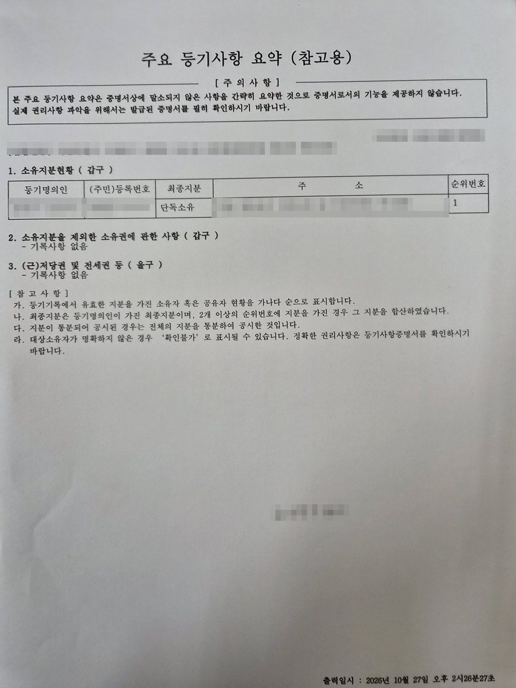
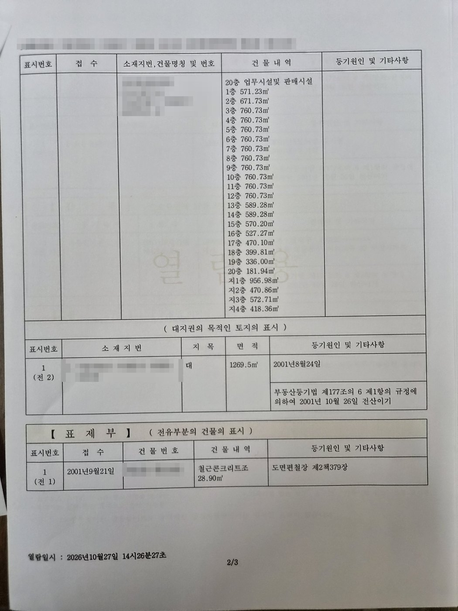
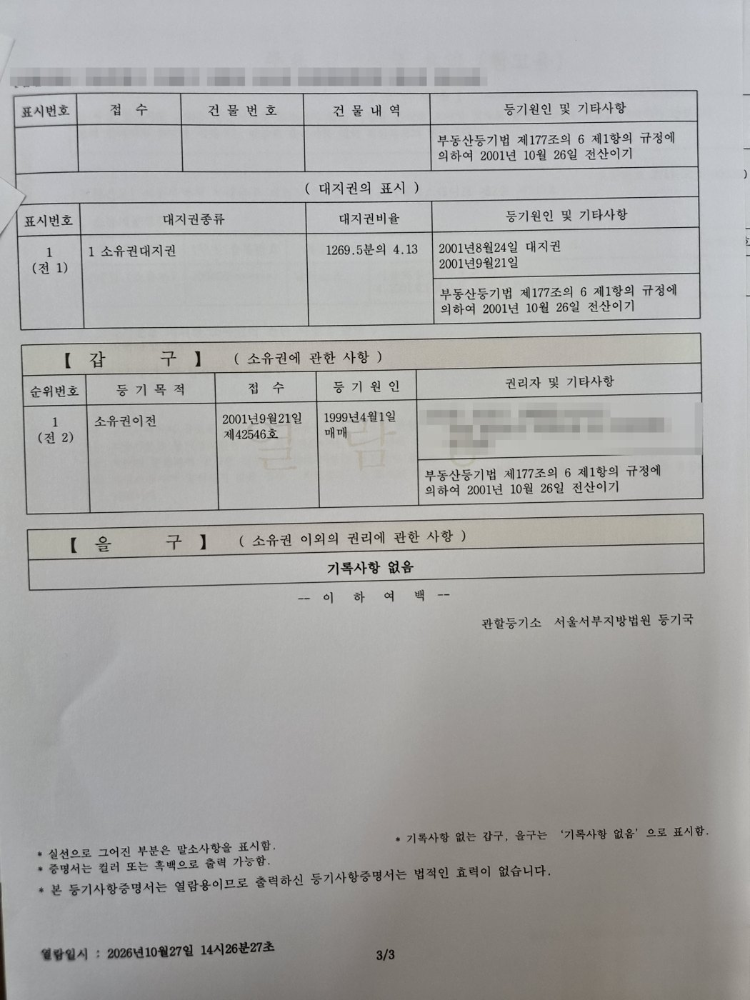

✍️ [직접 채우기: 도입 — 계약 전에 등기부를 같이 떼어 보던 상담 한 장면 (익명화, 확인된 것만)]
안녕하세요. 착한언니복덕방 신촌자이엘라&마포그랑자이 (착한언니) 부동산입니다.
집 계약할 때 제일 먼저 보는 서류, 등기부등본이죠.
그 등기부 열람·발급 수수료가 11월 23일부터 400원씩 올라요.
20년 넘게 그대로였던 금액이라 기사도 많이 나왔는데요, 오늘은 얼마로 바뀌는지와
그래도 언제는 꼭 떼어 봐야 하는지를 정리해 드릴게요.
| 1. 얼마나 오르나요? |
| 구분 | 지금 | 11월 23일부터 |
| 인터넷 열람 | 700원 | 1,100원 |
| 인터넷·무인 발급 | 1,000원 | 1,400원 |
| 등기소 방문 열람·발급 | 1,200원 | 1,600원 |
| 20장 초과 시 추가 | 장당 50원 | 장당 50원 (그대로) |
대법원 「등기사항증명서 등 수수료규칙」 개정 (2026.11.12 발표) · 법률신문·뉴스1 보도 기준
✔ 모든 항목이 똑같이 400원씩 올라요
✔ 20장 넘는 등기부의 장당 추가 요금은 그대로예요
| 2. 왜 올리나요? |
대법원 설명으로는, 등기 시스템을 운영하는 등기특별회계가 2022년부터 적자예요.
부동산 거래가 줄어 수입은 줄었는데, 시스템 운영비는 늘었다는 거예요.
수수료는 짧게는 22년, 길게는 29년 동안 동결돼 있었어요.
늘어난 재원은 AI 등기정보 분석 같은 새 등기 시스템 구축에 쓰고,
재정이 회복되면 예전(2002년·2005년)처럼 다시 내리는 방안도 검토하겠다고 밝혔어요.
| 3. 반대 목소리도 있어요 |
| 입장 | 주장 |
| 한국공인중개사협회 · 국회 청원 | 등기 확인은 전세사기를 막는 기본 절차 → 인터넷 열람·발급 무료화 요구 (청원 5만 명 넘어 법사위 회부) |
| 대법원 | 무료화하면 대출·체납 같은 민감 정보가 프로그램으로 대량 수집될 우려 · 특정 직군 비용을 세금으로 메우게 됨 |
2026.11.12~13 보도 기준 · 각 주체의 입장을 소개한 것이에요
대법원은 보완책으로 국토교통부 안심전세앱에서 선순위 권리 같은 필수 등기정보를 무료로 확인하는 기능을 개발 중이라고 했어요.
아직 개발 중이라, 지금은 등기부를 직접 떼어 보셔야 해요.
| 4. 그래도 이 세 번은 꼭 떼어 보세요 |
① 계약금 넣기 전
✔ 소유자가 계약하는 사람과 같은지, 근저당·압류·가압류가 있는지 확인해요
② 잔금 치르는 날 아침
✔ 계약 뒤에 새로 생긴 근저당이나 압류가 없는지 당일에 다시 확인해요
③ 전입신고·확정일자 다음 날
✔ 잔금일에 몰래 들어온 권리가 없는지 마지막으로 확인해요
세 번 다 떼도 인터넷 열람 기준 3,300원이에요. 보증금을 생각하면 아끼면 안 되는 돈이에요.
| 5. 등기부, 어디를 보면 돼요? |
실제로 저희가 계약 전에 뽑아 본 등기부로 보여드릴게요.
(소유자·주소·호수 같은 개인정보는 모두 가렸어요)
① 맨 앞 「주요 등기사항 요약」부터
인터넷 열람 때 함께 나오는 참고용 요약이에요.
소유자가 누구인지(갑구), 근저당·전세권이 있는지(을구)가 한 장에 정리돼 있어요.

📷 [이미지 업로드: 주요 등기사항 요약 (참고용) — 소유자·지분, 근저당 '기록사항 없음' (개인정보 모자이크) → 오른쪽 '이미지 내려받기']
✔ 다만 요약은 증명서 효력이 없는 참고용이라, 뒤쪽 본문까지 꼭 확인해요
② 표제부 — 이 집이 맞는지
주소·동·호수, 전용면적이 계약서와 같은지 봐요.
오피스텔은 면적이 작아서 계약서 면적과 다르면 바로 물어보세요.

📷 [이미지 업로드: 표제부 — 1동 건물, 대지권, 전유부분(전용면적) (주소·호수 모자이크) → 오른쪽 '이미지 내려받기']
③ 갑구 — 집주인이 맞는지 ④ 을구 — 빚이 있는지
갑구의 소유자 이름이 계약하는 사람과 같은지, 압류·가압류가 없는지 확인해요.
을구에 근저당·전세권이 있으면 금액(채권최고액)을 확인하고, '기록사항 없음'이면 깨끗한 상태예요.

📷 [이미지 업로드: 갑구(소유권) · 을구(소유권 이외의 권리) — 을구 '기록사항 없음' (소유자 정보 모자이크) → 오른쪽 '이미지 내려받기']
✔ 줄이 그어진 부분은 이미 지워진(말소된) 기록이에요. 지금 살아 있는 권리만 보면 돼요
| 6. 열람과 발급, 뭐가 달라요? |
| 열람 | 발급 | |
| 용도 | 내용 확인용 (화면·출력) | 제출용 증명서 |
| 11/23부터 | 1,100원 | 1,400원 |
| 추천 | 계약 전 확인은 열람으로 충분 | 은행·관공서 제출 때 |
대법원 인터넷등기소(iros.go.kr)에서 열람·발급 가능
✍️ [직접 채우기: 착한언니 현장 노트 — 우리 사무소는 계약 때 등기부를 어떻게 같이 확인해 드리는지 (실제 방식만)]
| 7. 정리하면 |
✔ 11월 23일부터 등기부 열람 1,100원 · 발급 1,400원 · 방문 1,600원
✔ 적자 때문이라는 대법원, 무료화하자는 중개사협회·청원 — 의견이 갈려요
✔ 안심전세앱 무료 확인은 아직 개발 중
✔ 계약금 전 · 잔금 당일 · 전입 다음 날, 세 번은 꼭 확인하세요
400원 올라도, 등기부 확인은 내 보증금을 지키는 가장 싼 보험이에요.
새 글 알림을 받고 싶으시다면 블로그 이웃 추가 해 두세요. 등기부에서 꼭 볼 칸 3곳도 이어서 정리할게요.
카카오톡 채널 착한언니복덕방 친구 추가 후 매수·매도·전월세 상담을 편하게 남겨 주세요.
인스타그램 @goodsister4080 에서는 이런 내용을 카드뉴스로 한눈에 정리해요.
쉽고 꾸준하게, 꼭 부자되세요!
────────────────
대법원 수수료규칙 개정(2026.11.12 발표, 11.23 시행) 및 법률신문·뉴스1 보도 기준이에요 · 시행 후 금액은 인터넷등기소 공지로 한 번 더 확인하세요
착한언니복덕방 | 신촌자이엘라 & 마포그랑자이 부동산
4인 전원 공인중개사 · 중개보조원 없음
중개사무소: 신촌자이엘라부동산공인중개사사무소
대표 공인중개사: 신수경 · 등록번호 11410-2019-00062
소재지: 서울특별시 서대문구 대현동 104-36, B101호 · 연락처: 02-364-4080
카카오톡 채널: pf.kakao.com/_xcxoBxnX